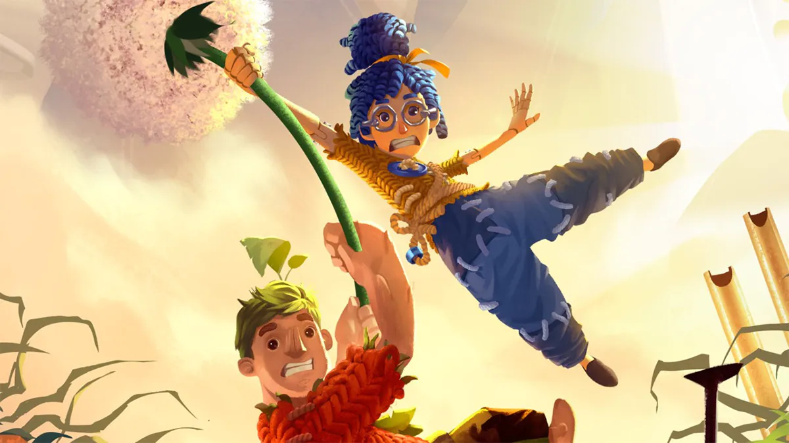

It takes two

It Takes Two (англ. Потрібні двоє) — відеогра в жанрах пригодницький бойовик та платформер, розроблена Hazelight Studios і опублікована Electronic Arts під маркою EA Originals. Гра була випущена для Windows, PlayStation 4, PlayStation 5, Xbox One та Xbox Series X, S в березні 2021 року. Робоча назва гри була «Like A Way Out», та дебютувала з назвою «It Takes Two». Грати можна лише в онлайновій або локальній кооперації з розділеним екраном між двома гравцями.
Назва It Takes Two не має прямого перекладу, приблизний переклад: дія, для якої потрібні двоє.
It Takes Two — це пригодницький бойовик з елементами платформера. Гра спеціально розроблена для ігрового процесу з розділеним екраном для двох, що означає, що її потрібно грати з іншим гравцем через локальну або онлайн-гру. У грі представлена велика кількість ігрових механік з різних жанрів відеоігор. Ці ігрові механіки пов'язані з історією та темою рівня. Наприклад, на одному рівні Коді отримує можливість перемотувати час назад, тоді як Мей може клонувати себе. Гравці повинні співпрацювати один з одним і використовувати ці здібності для вирішення різноманітних загадок, щоб просуватися далі по сюжету. У грі також представлена велика кількість мініігор.
На головну сторінку
Назад